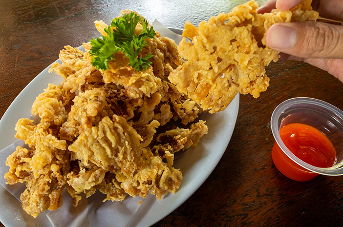
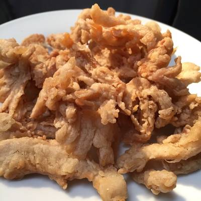
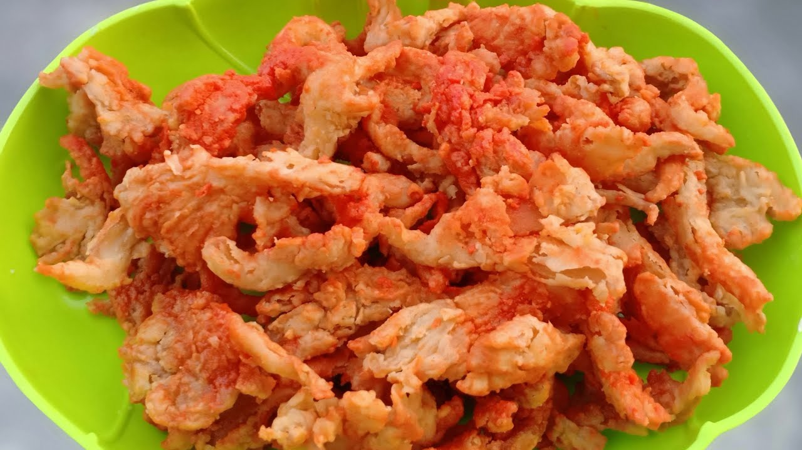

JAMUR CRISPY

Jamur crispy adalah camilan yang terbuat dari jamur yang telah dipotong, dibalut dengan adonan tepung berbumbu, dan digoreng hingga renyah. Camilan ini dikenal karena teksturnya yang garing di luar namun tetap lembut di dalam, serta rasa gurih yang menggugah selera.
Catalog
1. Jamur Crispy Original

Jamur Crispy Rasa Original adalah varian camilan yang menghadirkan cita rasa alami dan autentik dari jamur itu sendiri. Dibuat dengan jamur berkualitas tinggi yang dibalut dengan adonan tepung ringan dan digoreng hingga renyah, jamur crispy rasa original ini menawarkan rasa gurih yang murni tanpa tambahan bumbu yang berlebihan.
2. Jamur Crispy Pedas

Jamur Crispy Rasa Pedas adalah varian camilan yang menghadirkan sensasi gurih dan pedas yang menggugah selera. Dibuat dengan jamur berkualitas tinggi yang dibalut dengan adonan tepung berbumbu pedas dan digoreng hingga renyah, jamur crispy ini cocok untuk pecinta makanan pedas.
| No |
Catalog |
Harga |
| 1 |
Jamur Crispy Original |
Rp 5000 |
| 2 |
Jamur Crispy Pedas |
Rp. 7000 |